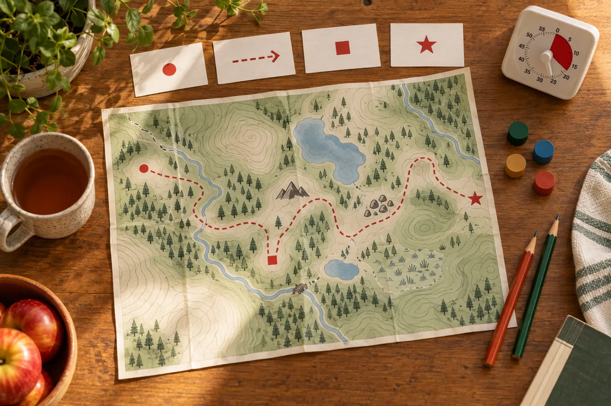

0–3 minutes
Choose one current official park map or a clearly fictional practice map.
Adult: remove trip pressure; nobody is leaving now.
AT HOME · 25 MINUTES · AGES 7+ · NO-SPEND
A child does not need to master contour intervals tonight. Teach the useful sequence: read the legend, find the start, trace one route, name a bailout, explain it back.

Most adults hand a child a map and ask, “Where are we?” That is the hardest question first. Start with a repeatable order instead: legend, start, destination, route, bailout, explain-back. The goal is not speed. It is for the child to point to evidence on the paper and say what they know versus what they are guessing.
USGS explains that map features are represented as points, lines or areas and that interpreting colors, lines and symbols is the first step. NPS treats navigation as a system used before and during a trip and recommends knowing how to use the chosen tools, carrying a physical map as backup, and checking the specific park. This game borrows that discipline without pretending a kitchen table is a trail.
Cost should be zero if the household already has paper and pencils. Do not buy a compass for this first lesson. A compass introduces direction and declination questions that deserve their own qualified instruction. If you print a real park map, write the download date on it; trail status, closures and access can change.
Ask the child to find five things the legend actually defines. Use exact phrases: “This dashed line means ___ on this map.” Avoid universal claims. A dashed line can mean different things on different maps. USGS notes that map symbols change over time and between products, which is why the legend on the current map wins.
Sort features into three buckets: points, lines and areas. A trailhead or restroom may be a point. A trail, stream or road is usually a line. Water, vegetation or a developed zone may be an area. If the map omits a feature, mark it unknown rather than drawing it from memory.
Put the start token on a named trailhead. The child traces the route slowly with one finger. At each junction, stop and read every branch. The adult asks: “What will the junction look like on paper?” and “What evidence says we take this branch?” The child may use a route arrow card only after naming the junction.
Do not calculate hiking time from map distance alone. Grade, surface, weather, crossings, crowds and family pace matter. For a real outing, use the destination’s own distance and difficulty information, current conditions and the Central New York trail picker. The game teaches structure, not a universal minutes-per-mile formula.
A bailout is not an imaginary shortcut. It must be a route or decision point supported by the current map and destination guidance. For a simple loop, it may be “turn back at the first junction if anyone is tired.” For an out-and-back, the bailout may simply be an earlier turn-around. If the map shows cliffs, water, restricted land or no alternate route, the child should say there is no mapped shortcut.
Add three constraint cards verbally: bathroom needed, rain begins, and daylight is shorter than expected. The child does not need to solve an emergency. They choose go, shorten or stop using the family weather cutoff. Reward the conservative answer.
Remove the route arrow card. The child points to the start, names the first junction, traces the route, shows the bailout and says one uncertainty. The adult listens without correcting until the end. Then swap roles. When the adult intentionally makes one unsupported claim, the child should challenge it with the legend or map.
Use a three-column debrief: map says / we infer / we must verify. “Blue line is water” belongs under map says only if the legend supports it. “The crossing may be slippery” is an inference. “Bridge open today” belongs under verify. This separation is the real skill.
Ten-minute version: legend, start, one junction, stop. No-printer version: use an official paper brochure already at home or draw a fictional four-junction map; do not copy a current route from memory. Younger sibling: match symbol cards without planning a route. Older child: compare a current official park map with a USGS topographic map and list what each does and does not show.
This is already the bad-weather option. If attention collapses, stop after the legend. Do not turn a navigation lesson into a quiz the child can fail. Repeat later with a familiar place.
On the next short, familiar outing, the adult remains navigator. Let the child find the trailhead symbol, predict the first signed junction and confirm it on arrival. Keep the official current map accessible. NPS recommends navigation tools, a physical backup and practice before relying on equipment. The no-service day-trip plan adds downloaded maps, meeting points and the turn-around rule.
Never send a child ahead to “prove” the route. Never use the game to enter backcountry terrain, ignore closures or replace local advice. If map, signs and ground disagree, stop and use official staff or emergency guidance. The confident voice at the table is not evidence on the trail.
Skip topographic contours for children still learning ordinary symbols and left/right route sequences. Use a simple zoo, museum or neighborhood map instead. Skip a real destination map when it will create false confidence about a trip the family is not prepared to take. Simplify for visual-processing needs with fewer symbols, higher contrast and one route. The goal is not cartographic vocabulary; it is a safer habit of reading before moving.
MAKE THE DAY COUNT
Build the plan your family can finish well, then leave enough energy for the next part of the day.
More family plans